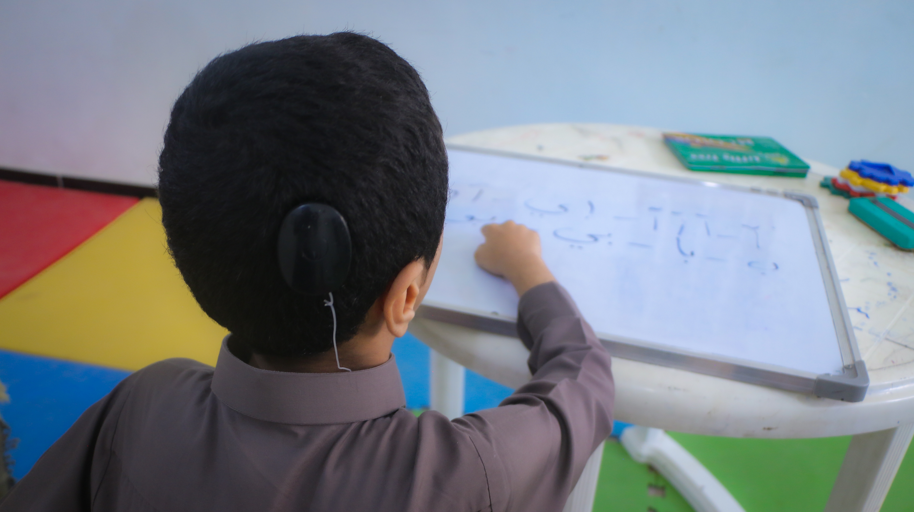

تعرف على قصتنا ورؤيتنا في بناء مجتمع يسمع بوضوح
تأسست مؤسسة السمع لتكون منارة أمل لكل طفل يحلم بسماع صوت أمه، ولكل شخص يرغب في استعادة تواصله الفعال مع العالم المحيط.
نؤمن في مؤسسة السمع بأن حاسة السمع هي بوابة العقل للتواصل مع العالم الخارجي، ولذلك خصصنا كل جهودنا لتوفير أحدث التقنيات والبرامج التأهيلية.
